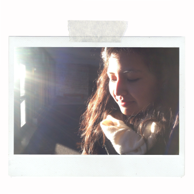
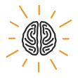
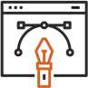
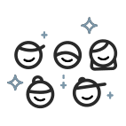
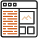
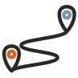

Nice to meet you!
tl;dr —
I’m Sarah. I’m a Denver based UI / UX designer who cares deeply about improving everyday experiences for real people through design. From neuroscience & psychology to education to the tech & design industry, I’ve finally found the place where my strengths and interests intersect.
How did I get here?
From biology to psychology to a peek at a new world of design...
The first official design course I took wasn’t until my senior year of college. Before then, I had focused heavily on science; from cellular & molecular biology to organic chemistry to physiology, I loved the challenge of learning the complexities of our own bodies and the world we live in but I craved the broader picture of how that tied in with our own behavior and actions we take in the world. It wasn’t until I took my first psychology class that I found the intersection of both science and human behavior that I was looking for. I spent the rest of college immersing myself in neuroscience classes and behavioral psychology courses, understanding the way in which our brains connect us with others and the world around us. I loved every minute of it. And then, my senior year, I took a design course. We worked with the Adobe Creative Suite and my eyes were opened to a whole new world. That college course opened my eyes to digital design and I spent hours on both academic and personal projects in Photoshop and Illustrator.
- 
- 
What I loved and learned about education...
What could have happened if I took that design course my first year of college instead of my last? I graduated with a degree in Psychology, put my interests for the hard sciences side stage, and put my passion for working with and for people center stage. I started a career in education. From working with special education students to teaching a class of 25 Kindergarten students, teaching encompassed some of my biggest strengths: understanding the needs of my students, advocating for those needs, and articulating and leading creative lessons to engage students. Working with people and supporting young students, particularly in communities in need, was the main reason I chose to work in education; I loved seeing and hearing the perspectives and creativity from my students. However, being an educator is more than engaging daily lessons and building strong relationships and the standardized exams and systematic gaps put in place required me to take a step back.
- 
Searching for my place in the tech and design industry...
I grounded myself in my strengths and let myself explore my interests. I couldn’t shake that design course I took in college. I wasn’t ready to stop working with and for people and landed a job working supporting clients for an online global creative marketplace. It blended my desire to build human connections, work to understand their needs, construct a solution together in a world of digital design. Working 40 hours a week ensuring that my clients received beautiful logo designs, thoughtful web and app designs, and illustrations that told captivating stories, I wondered if there was a place for me on the other side: the designer.
Early mornings and late nights taking time to grow...
I had been pursuing graphic design personal projects on the side but it wasn’t until I found UX design that I knew I had found my place. A field dedicated to finding creative, innovative and meaningful solutions for real people: the intersection of digital design grounded in human needs and behavior. I knew that to truly transition into the field, it would take dedication, commitment and persistence. I enrolled in Bloc’s User Experience Design program, ready to give it my all. While working full time, I fell in love with UX design working extra hours in the morning and evening to develop my skills in visual design, the UX design process and front end development.
- 
Blossomed. Just the right balance.
Studying biology taught me how to persevere through challenging topics with inquiry and patience, while psychology exposed me to the rewarding feeling of approaching a field with passion and enthusiasm. Education strengthened my leadership skills, as I advocated for my students and collaborated with teachers, families, and communities, while working in the tech industry as Client Support Specialist honed my ability to quickly build relationships through empathy and positivity, and to provide thoughtful and responsive solutions. For a long time I believed that creativity and analytical thinking could not be part of a single career. UX design is the place intersecting all of my passions, interests, and skill sets. I’m thankful for every experience I’ve had that has that has brought me here.
UI & UX design: I’m here to stay.
- 